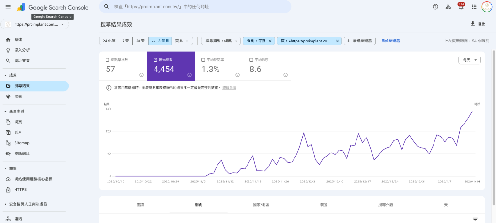
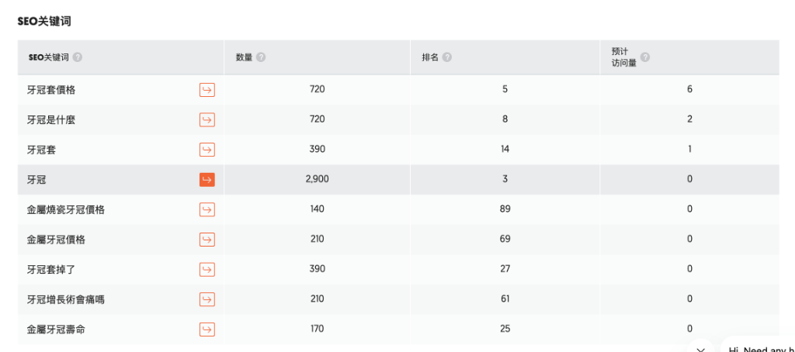
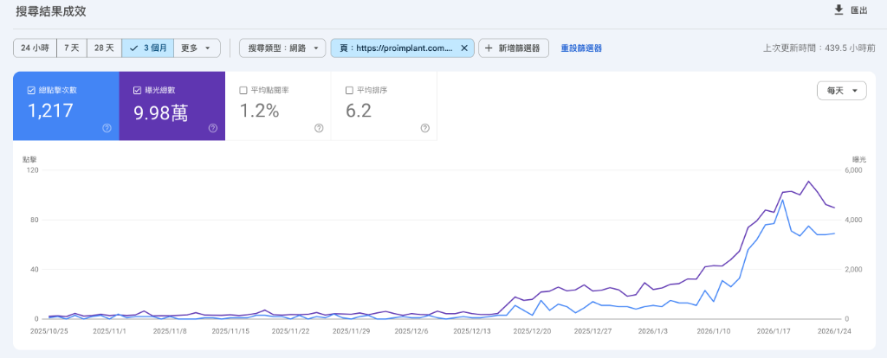
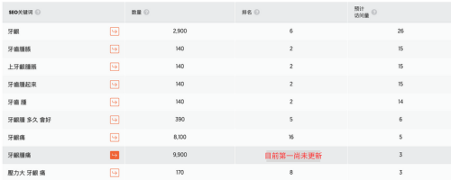
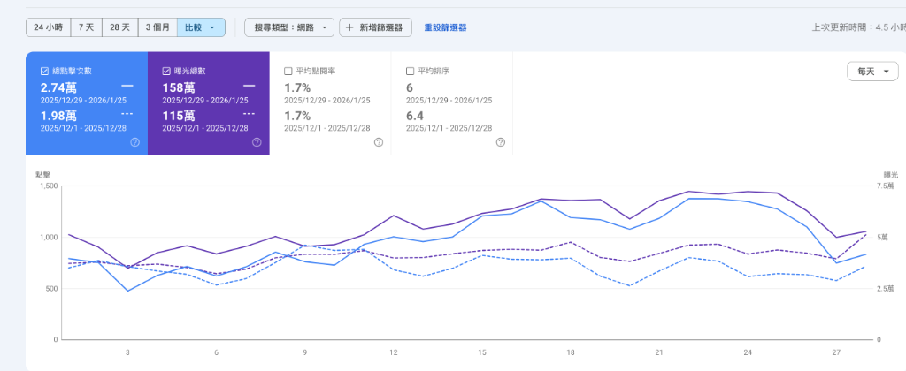
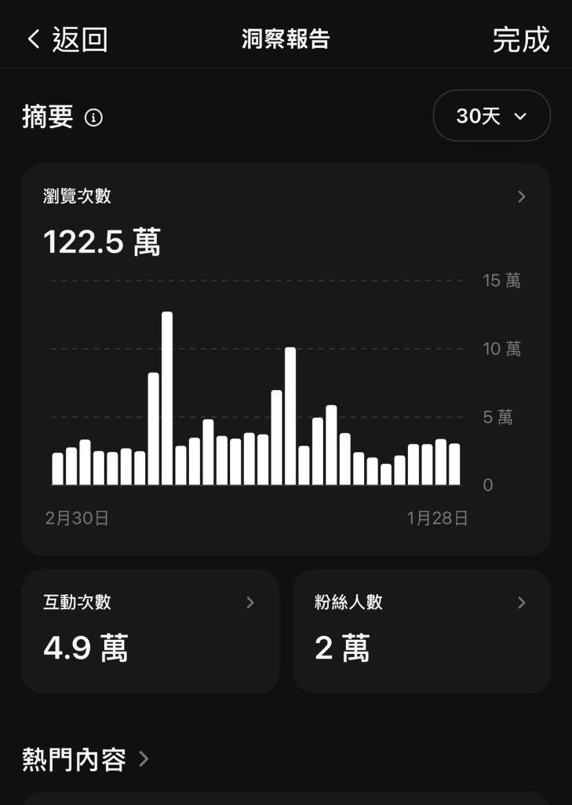

真實數據，拒絕空談。三個從第二頁直攻首頁的實戰案例。


挑戰： 關鍵字卡在第二頁末段，流量成長停滯。
策略： 針對搜尋意圖 (Intent) 重構內容，並建立內部連結權重傳遞。兩週內見效。


挑戰： 醫療類 (YMYL) 高競爭詞，權威性門檻極高。
策略： 加強 E-E-A-T 信號，優化行動裝置體驗，成功擠入首頁。

挑戰： 網站流量長期停滯，受限於舊有架構與關鍵字佈局。
策略： 根據 GSC 數據進行全面診斷，優化網站體質 (Technical SEO)
並重整內容策略，單月點擊數成長 38%。
我不只是一個 SEO 顧問，我更擅長 使用 AI 測試各平台演算法。這意味著我不只會看報表，我能從邏輯層級預判流量趨勢並精準佈局。
同時，我將演算法研究應用於社群。在 Threads 擁有 3 萬追蹤者。
「只要懂 AI 模擬演算法後的邏輯，無論是 Google 還是 Threads，流量都是可以被設計的。」
